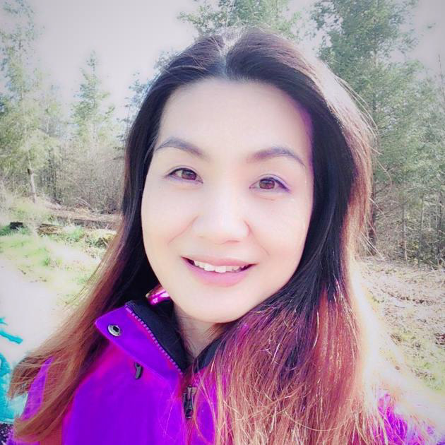

About Me
The person behind the work.

Design is how I bridge worlds.
I grew up in South Korea with a deep appreciation for craft, precision, and the kind of design that works hard without calling attention to itself. Those values followed me across the Pacific — and they still shape every project I take on.
My career started at Leeho, a stationery manufacturer in Korea, where I learned what it means to design at production scale — rapid product cycles, global trade shows, and the relentless pressure to make every new line better than the last. It was demanding work, and I gave it everything. But after years of late nights and constant output, I made a deliberate choice: I came to the United States to reset, study English, and pursue graduate-level design education on my own terms.
That decision changed my trajectory completely. What started as a personal reset became a 15-year career building brand systems from the ground up — most of it at UEi Test Instruments, where I served as the company's creative lead, building the entire brand identity, packaging system, digital presence, brand campaigns, and UX design across a 200+ SKU product line. No team. Full ownership. Every touchpoint.
Living between two cultures has made me a better designer. I understand how to read a room, adapt communication across contexts, and build trust with people who think differently than I do. That cross-cultural instinct shows up in my work — in the way I approach systems thinking, in how I balance visual precision with human warmth, and in the care I bring to every brand decision.
I believe good design should be simple and easy to use — not because it's easy to make, but because the real skill is making something complex feel effortless to the person holding it.
What I bring to every project
Background
Let's work together.
I'm currently open to senior creative roles at brand-driven companies. If you're building something that needs a designer who can own it end to end — let's talk.